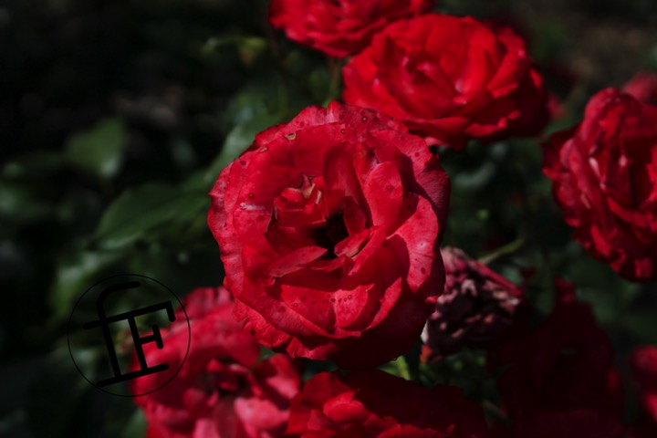

june 2021

being lucky enough to arrive in season with all the roses in bloom, this june i got to expirance the beauty of Columbus Ohio's park of roses. i had visted before at my brother wedding but i hadnt yet fostered an interest in photography. After purchasing my camera and a macro filter, i decided i had to visit again!
the weather was wonderful with lighting perfectly catered towards the capturing of the viberant colors on display that day. Many of the photos i took using my macro filter, which allowed me to capture the invisible details and delicate folds of the flowers: such as you can see in this picture
the varity of colors: greens, blues, purples, reds made it difficult to choose just a few photos for this article! However ive chosen this image because of how beautiful it is despite what may be considered by some defects.

that macro filer again exposing extraordinary detail! Took me 10 minutes to get the shallow focus dialed perfectly in on the little dude's head
altogether, i had an amazing time!
{kind=link}